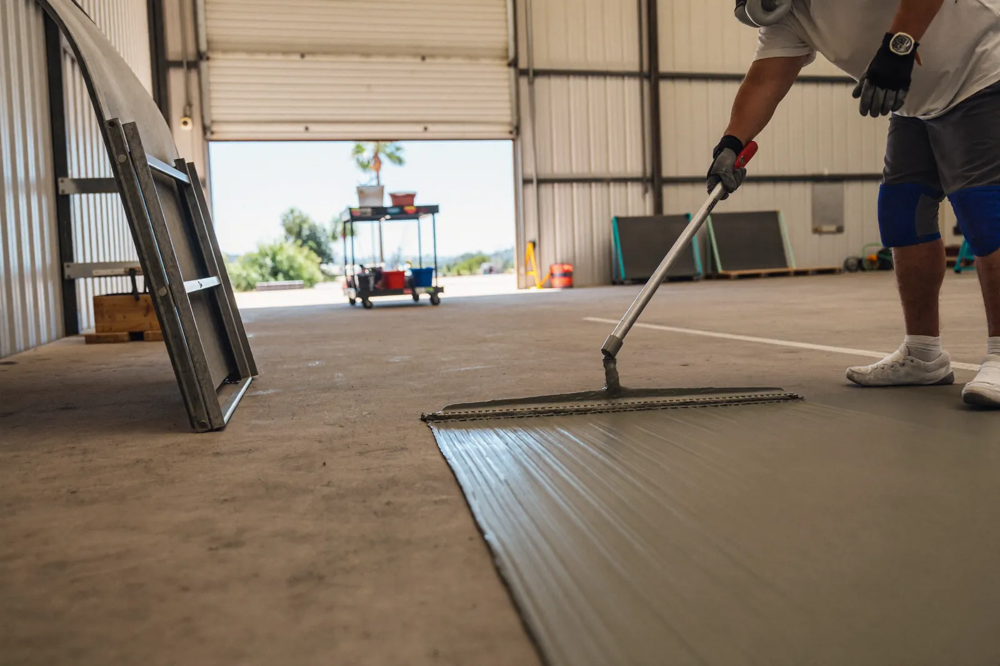

High-build coatings, joint repair, aisle striping and anti-slip texture for business floors — scheduled around your hours so the doors stay open.
Call Now for a Free EstimateTell us about the floor and we’ll call you back the same working day.
Prefer to talk? Call (619) 815-7296

Commercial epoxy flooring in Chula Vista protects the concrete in warehouses, auto shops, gyms, retail spaces and commercial kitchens. We work with owners, property managers and tenants across the Main Street corridor and Otay Mesa, planning each install around how the business actually runs.
A commercial install starts with a site walk to plan the phases, the cure times and how equipment and inventory will move. Larger floors are ground with ride-on or heavy walk-behind grinders connected to industrial dust collection.
Joints and cracks are filled, damaged edges are rebuilt, and a high-build epoxy or urethane system goes down in one or more coats. Striping, safety markings, anti-slip texture and cove base along the walls are added where the space needs them.
Business owners usually call when the bare floor starts dusting, stains won’t clean up, forklift lanes are worn into the concrete, or an old coating is flaking. A new lease or tenant improvement is another common time to do it, before racking and equipment move in.
Food prep areas, auto bays and gyms also need floors that clean easily and hold up to chemicals, water and dropped weights.
Bare concrete wears from the top down. Hard forklift and pallet-jack wheels grind the surface, joints chip at the edges, and the fine dust that comes off spreads through the building.
Chemicals, oils and cleaners soak into unsealed concrete and weaken it, and hot-water washdowns in kitchens put the surface through constant swings in temperature. Moisture coming up through the slab can also push off coatings that weren’t designed for it.
Every commercial floor is quoted after a site walk. Schedule a free site visit and you’ll get a written scope and schedule.
| High-build epoxy | Urethane cement | |
|---|---|---|
| Best for | Warehouses, auto shops, showrooms, gyms | Commercial kitchens, breweries, cold storage |
| Heat and washdowns | Fine for normal cleaning | Handles hot water and big temperature swings |
| Moisture in the slab | Needs a dry slab or a moisture primer | Tolerates more moisture |
| Finish | Glossy, many colors, crisp striping | Matte to satin, textured |
Many buildings use both: urethane cement in the kitchen or wash area and epoxy everywhere else. We’ll recommend the right system for each zone at the site walk.
Yes. Many commercial floors are done at night, over a weekend or in sections, so the business can keep running. The schedule is planned at the estimate around your hours and how much of the floor can be closed at once.
It depends on the coating system and the size of the area. Fast-curing polyaspartic and urethane systems can return a section to foot traffic within a day, while thicker epoxy systems need longer. You get a clear return-to-service time before work starts.
Yes. Aisle lines, walkways, forklift lanes, parking stall lines and hatch zones can be added in contrasting colors as part of the floor. They are coated into the system, so they don't wear off like tape or paint.
Yes. A fine aggregate is mixed into or broadcast over the topcoat to add grip. The texture level is matched to the space, from light grit for a showroom to a heavier texture for wet areas.
Call for a free commercial site visit and written scope.
Call (619) 815-7296 for a Free Estimate Request an Estimate Online